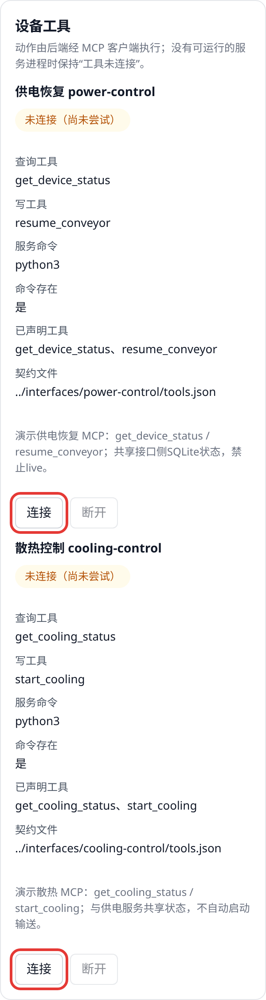
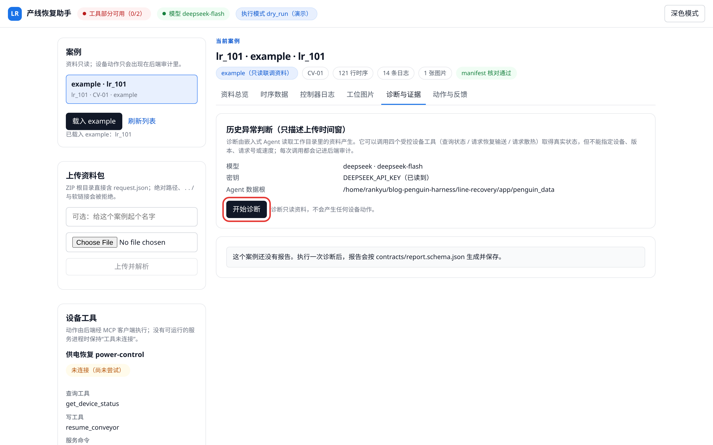
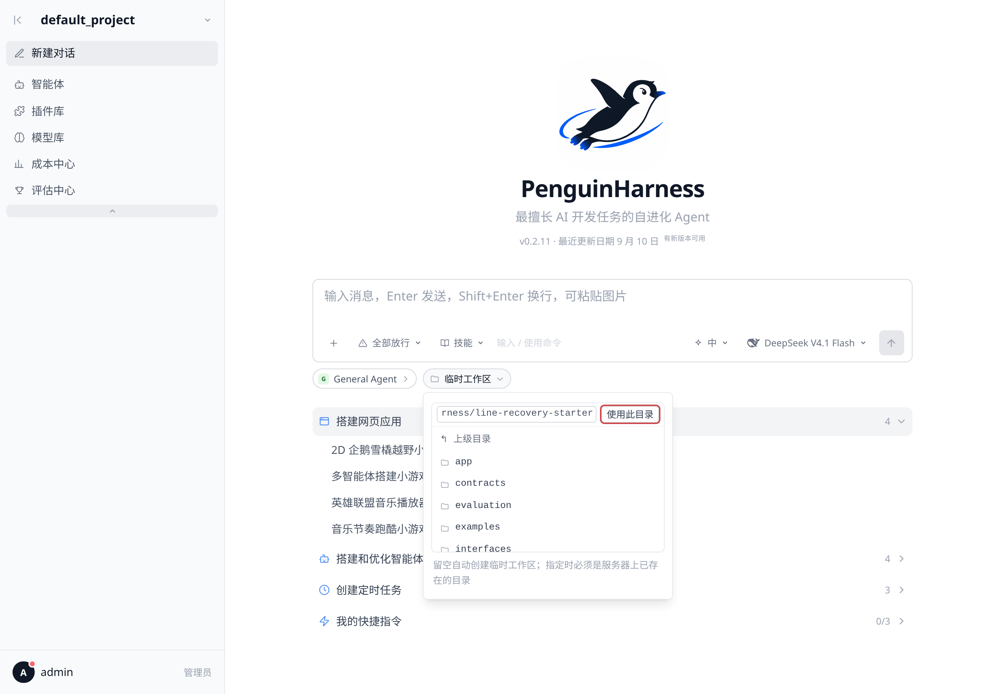
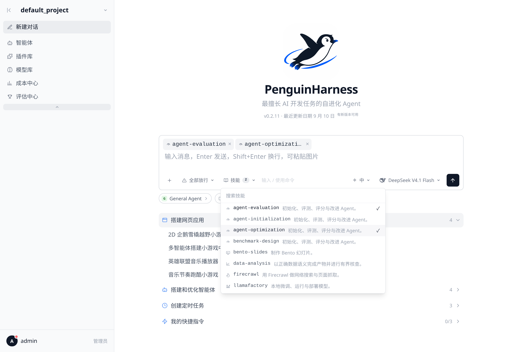
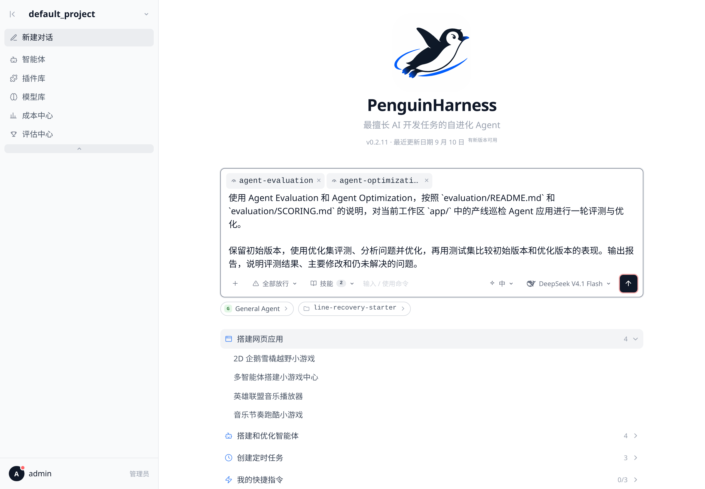
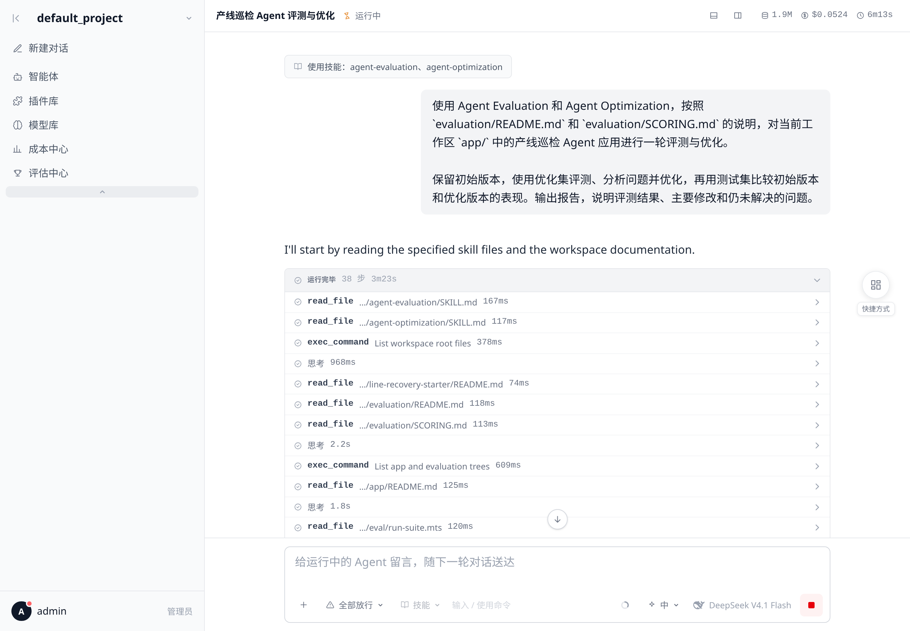
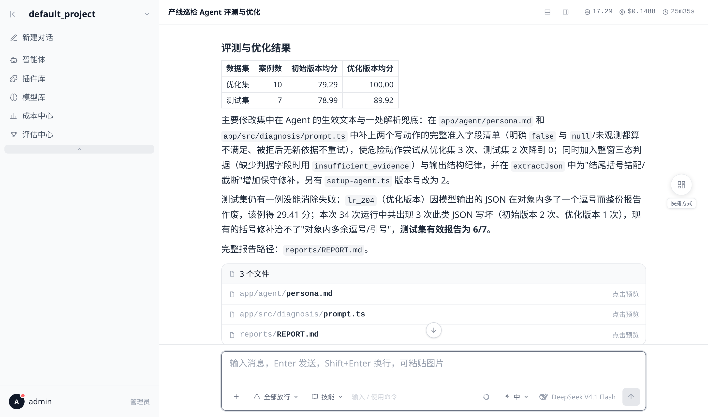
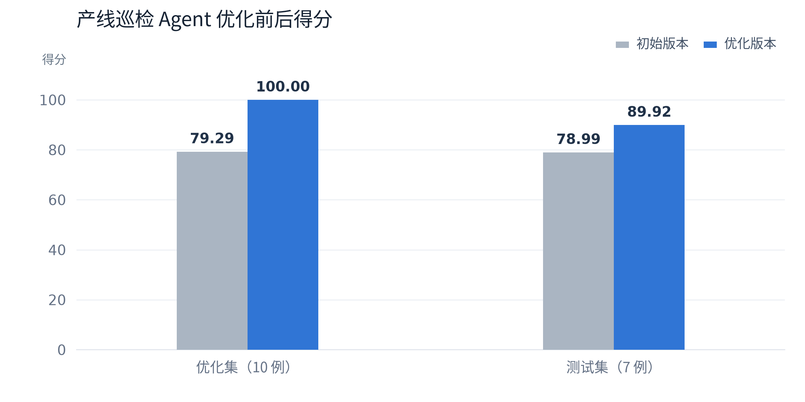

当前，制造业正持续推进自动化与智能化转型，生产现场对设备运行管理和异常响应效率也提出了更高要求。让 Agent 技术更深入地参与日常巡检与异常处理，成为提升生产运维效率的一个重要方向。
在生产运维中，产线的稳定运行离不开日常巡检和异常处理。现场人员需要结合设备状态与生产信息判断问题，并协调后续处置。例如，部分产线在供电恢复后仍需人工重启，响应不及时就会延长停机时间，影响生产。因此，如何减轻重复工作、提高异常响应效率，是产线运维中的一个实际需求。
目前，Agent 为这类工作提供了一种新的实现方式：将业务信息和工具调用结合起来，协助完成从发现问题到执行处理的工作流程。在这类场景中，Agent 可以结合运行资料和设备当前状态分析停机原因（例如停电），并在确认具备运行条件后调用相应工具恢复产线。下面以供电恢复后输送带仍未运行的情况为例，对比人工与 Agent 的处理流程：

然而，人工构建这种 Agent 耗时耗力，还需要花时间编写前后端代码，并进行效果调优。好在，Penguin Harness 是一个用于自动化开发和优化 Agent 的框架，可以大大减少这些工作所需的人工投入。使用者提供业务需求、输入示例、格式规范和 MCP 工具，Penguin Harness 据此开发 Agent 及配套网页应用，并结合评测反馈持续改进 Agent 的任务表现。具体流程如下图所示：

本文将以工业生产中的产线巡检场景为例，展示如何使用 Penguin Harness 开发和优化 Agent 应用。
在开始开发之前，我们需要先安装 Penguin Harness 客户端、接入模型，并完成一次简单交互。下面以桌面客户端和 DeepSeek Flash 为例，介绍后文会用到的基础操作。
我们先安装 Penguin Harness 桌面客户端，后续任务都在客户端中完成。
第 1 步：下载并安装客户端
打开 Penguin Harness 客户端下载页面，选择与自己电脑系统对应的安装包，下载后按提示安装。

第 2 步：打开客户端
安装完成后，打开客户端。在主界面左侧点击“模型库”，即可配置接下来要使用的模型。

打开客户端后，还需要接入模型服务，Penguin Harness 才能开始处理任务。下面以 DeepSeek 为例，完成 API Key 的获取和模型配置。
第 1 步：获取 API Key
先打开 DeepSeek 开放平台，创建 API Key，再将 API Key 填入客户端，用于验证模型调用身份。
第 2 步：填写并保存模型配置
在“模型库”中展开 DeepSeek 分组，打开 DeepSeek Flash 的模型配置，填入自己的 API Key，点击“确认”保存。通过官方服务接入时，API 地址为 https://api.deepseek.com，模型 ID 为 deepseek-flash。下图标出了对应位置。

配置保存后，我们再确认模型是否已显示在模型库中，并为接下来的任务选择 DeepSeek Flash。
第 1 步：确认模型已保存
保存后，DeepSeek Flash 会显示在模型库中。下图中的“默认”标签表示它已设为默认模型；也可以在每次任务开始前单独选择模型。

第 2 步：选择本次任务使用的模型
点击左侧“新建对话”，在输入框右下方打开模型列表，选择 DeepSeek Flash。列表中的勾选标记表示本次任务将使用该模型。

模型配置完成后，让我们先用一个简单任务体验一下 Penguin Harness。
第 1 步：克隆示例仓库
为了跟着本文从零开发，可以先将 line-recovery-starter 仓库克隆到本地（这个仓库在之后的章节也会用到）。在已安装 Git 的电脑上，打开终端，运行：
git clone https://github.com/rank-Yu/line-recovery-starter.git第 2 步：选择工作区
命令完成后，当前目录下会生成 line-recovery-starter 文件夹。回到 Penguin Harness，点击输入框下方的工作区入口，选择这个文件夹，再点击“使用此目录”。Penguin Harness 就可以在这个文件夹下工作。

第 3 步：了解技能入口
输入框下方的“技能”菜单列出了当前可用的技能，它们为特定任务提供操作说明。可以先熟悉这个入口，开发或评测时再选择相应技能；这次的简单任务不需要选择技能。

第 4 步：发送首次任务
准备好后，在会话输入框中发送一条简单指令，让 Penguin Harness 先了解工作区：
请查看当前工作区的 README.md，简要介绍项目用途，以及 contracts、examples、interfaces 三个目录的作用，控制在 150 字以内。只读取文件，不修改或运行项目。

第 5 步：查看任务回复
发送后，Penguin Harness 会读取项目文件并回复项目介绍，我们就完成了这个简单任务。

本章介绍了 Penguin Harness 的基础使用：从安装客户端、配置模型 API，到选择 DeepSeek Flash、设置工作区并完成首次交互。这些操作为后续的应用开发和评测优化做好了准备。
在上一章中，我们完成了 Penguin Harness 的基础配置。在这一章中，我们将用 Penguin Harness 开发产线巡检 Agent 及其配套前端和后端，以下统称为“Agent 应用”。
在 2.4 节中，我们已经将 line-recovery-starter 仓库克隆到本地。下表列出了工作区中的主要材料及其用途。
工作区材料 | 用途 |
|---|---|
| 业务需求与交付要求 |
| 输入数据、设备状态、操作和报告的格式规范 |
| 提供给 Agent 应用的示例输入数据包 |
| 两个 MCP 服务及其初始化和接入说明 |
| 后续评测与优化所需的文件 |
README.md 是交给 Penguin Harness 的任务文档，它介绍了我们这个开发任务具体要干什么，要怎么干。下面是文档内容的简要概括：
目标：制作中文产线恢复助手，支持上传 ZIP 或加载示例。
业务场景：
1. 来电后输送带仍未运行：核对供电、驱动与运行许可，
满足条件后请求恢复，再检查带速和新的出口计数。
2. 温度升高导致输送暂停：请求开启散热并观察温度，
温度达标且重新获得运行许可后，再请求恢复输送。
处理要求：结合运行记录、日志、状态和图片判断；
先查询工具当前状态，再决定操作，最后核查新反馈。
条件不足或反馈未确认时，如实说明并转人工。
交付内容：在 app/ 生成 Agent、后端、中文前端和启动说明，
接入已有的两个 MCP 服务，展示证据、动作记录和结果。
工具未连接时明确提示，不伪造动作成功。contracts/ 定义了输入数据、设备状态、操作和报告的格式规范。例如，输入数据需要包含哪些字段、分析报告应按什么结构输出，都在这里约定。
examples/ 存放示例数据，其中 examples/input/ 是提供给 Agent 应用的示例输入数据包，包含以下文件：
examples/input/
├── request.json # 本次要解决的问题
├── telemetry.csv # 电压、带速、温度和产出记录
├── events.jsonl # 设备事件日志
├── device_state.json # 采集时的设备状态
├── images/frame_001.png # 工位图片
├── operating_guide.md # 设备操作说明
└── ...例如，events.jsonl 记录了设备状态变化日志。从下面摘取的两条日志可以看出，设备曾发生供电中断，恢复供电后，驱动虽然已就绪，但仍需等待新的运行许可才能启动。
{
"timestamp": "2026-09-15T09:00:40+08:00",
"message": "上游24 V电源有效反馈由1变0，驱动支路电压降至0 V；独立供电的控制器保持在线。"
}
...
{
"timestamp": "2026-09-15T09:01:12+08:00",
"message": "驱动重新就绪；配置禁止来电自动启动，等待新的获准运行请求。"
}这些日志会和运行数据、工位图片一起交给 Agent，供它分析停机原因和恢复条件。
evaluation/ 用于开发完成后的评测与优化，我们将在第四章介绍。
Agent 应用除了阅读已有的业务材料，还需要查询设备当前的状态，并对设备执行正确的操作。
在本例中，我们希望 Agent 应用能够完成恢复输送带运行和开启风机散热两个任务。因此，interfaces/ 中提供了对应的两个 MCP 服务。每个服务提供相应的 MCP 工具，供 Agent 查询设备状态和执行操作。两个 MCP 服务的用途如下：
MCP 服务 | 用途 |
|---|---|
| 查询供电和输送带状态，满足条件后恢复输送带运行 |
| 查询温度和风机状态，开启风机散热 |
有了这两个 MCP 服务后，Agent 应用就可以控制设备，完成任务了。例如，供电恢复后输送带仍未运行，Agent 可以先通过 power-control 检查设备状态，满足条件后请求启动输送带。如果是温度过高导致停机，则先通过 cooling-control 开启风机，等温度降下来，再检查能否启动输送带。
要让 Agent 用上这两个 MCP 服务，还需要 Penguin Harness 在开发时完成接入。因此，我们提前把这两个 MCP 的材料放在工作区（interfaces/），供 Penguin Harness 参考。
另外，本例这两个 MCP 服务都在本地模拟环境中运行，后文演示中的启动、降温和产出变化，也都来自这个模拟环境。
现在，我们已经了解了这两个 MCP 的用途。如果想知道它们更具体的配置，可以查看 interfaces/README.md。
在准备好业务材料和 MCP 服务之后，就可以让 Penguin Harness 开始开发 Agent 应用了。
第 1 步：选择工作区
打开 Penguin Harness，新建对话，将工作区设为 2.4 节中已克隆到本地的 line-recovery-starter。

第 2 步：选择开发技能
打开输入框下方的“技能”菜单，选择 agent-initialization 技能。

第 3 步：发送开发指令
接着，将 README.md 中的开发指令发送给 Penguin Harness，让它根据仓库中的已有材料开发产线巡检 Agent 与配套网页。
请使用 agent-initialization，先读 README.md，再看 contracts/、interfaces/ 和 examples/input/，在 app/ 制作产线恢复助手，包括 Agent、后端、中文前端和启动说明。按现有契约实现两个 MCP 的客户端；服务未交付时明确显示未连接，不伪造动作成功。用 example 联调输入读取和页面，保留初始版本，本轮不扩充数据、不做优化或正式评分。

收到指令后，Penguin Harness 就会开始读取材料并开发 Agent 应用。展开运行记录，可以查看具体的开发过程。

第 4 步：查看开发结果
经过约 20 分钟的开发，Penguin Harness 开发出了完整的 Agent 应用，并给出了以下交付说明，列出了交付文件及其用途：

Penguin Harness 每次生成的应用可能有所不同。为方便复现，我们已将本例的 Agent 应用保存在 line-recovery 仓库里。该应用包含了 Agent 本体和完整的前后端，其主要文件结构如下：
app/
├── agent/ # Agent 的角色说明与技能
│ ├── persona.md
│ └── skills/
├── src/ # 后端、案例分析与工具调用
├── public/ # 配套网页
├── config/
│ └── interfaces.json # 两个 MCP 服务的连接配置
├── package.json # 项目依赖与启动命令
└── README.md # 安装、配置与启动说明这一节，我们已经开发好了 Agent 应用。接下来，我们将通过一个案例，看看它的实际运行效果。
下面，我们将演示 Penguin Harness 开发的 Agent 应用——产线恢复助手。
第 1 步：打开应用
为了方便体验，我们已将本例的 Agent 应用部署到魔搭创空间，你可以通过产线恢复助手创空间直接访问。建议先将该创空间复制到自己的账号下再体验。如果你希望在本地打开应用，也可以参考仓库中 app/README.md 的安装和启动说明。
打开产线恢复助手后，我们将看到初始界面，如下图所示。

第 2 步：加载案例资料
打开应用后，左侧是案例列表和“上传资料包”入口，右侧展示当前案例。下图是已载入示例数据包的首页，红框标出了资料上传入口。

本次以 lr_101 示例资料包 为例。点击“载入 example”，即可加载该资料包。你也可以先下载 lr_101.zip，然后在左侧选择下载好的文件，点击“上传并解析”。
第 3 步：浏览资料
我们先浏览资料包中的工位图片和时序数据，了解设备的基本情况。
加载资料后，先点击右侧“工位图片”页签，查看工位和纸箱的分布。

再切换到“时序数据”页签，查看供电和带速的变化。从下图所展示的折线图可以看出，供电已经恢复，但带速仍为零，产出计数也没有增加。

第 4 步：连接设备工具
先在左侧“设备工具”区域，分别点击供电恢复和散热控制服务的“连接”按钮，确认两个服务均显示“已连接”后，再开始诊断。

第 5 步：发起诊断
下面，我们让 Agent 对这个案例做一次诊断。
切换到“诊断与证据”页签，点击“开始诊断”按钮；当已有报告时，按钮会显示为“重新诊断”。

第 6 步：查看运行结果
诊断完成后，我们分别查看 Agent 的分析结论和设备操作的执行反馈。
查看诊断与证据
在“诊断与证据”页签中，可以查看 Agent 的分析结论和对应证据。

从上图中可以看到，Agent 判断输送带因供电中断而停机。虽然供电已经恢复、驱动已经就绪，但设备没有收到新的运行请求，因此仍未启动。
查看动作与反馈
切换到“动作与反馈”页签，查看 Agent 的操作记录及执行结果。

从上图的“本次执行详情”可以看到，输送带已恢复运行，带速为 0.397 m/s，出口累计计数从 1813 增至 1816，有新的纸箱通过。这说明 Penguin Harness 开发的 Agent 应用成功完成了本例的产线恢复任务！
本章介绍了如何使用 Penguin Harness 开发产线巡检 Agent 应用，并通过一个来电后重启输送带的案例，演示了应用的使用过程。在本例中，Agent 应用成功完成了产线恢复任务。
上一章，我们用 Penguin Harness 开发了产线巡检 Agent 应用，并演示了它处理一个案例的过程。本章，我们将让 Penguin Harness 评测并优化 Agent 应用，帮助它更好地完成产线恢复任务，再测试看看它的表现是否真的提升。下图展示了这一过程：

这一节，我们将准备评测材料，选择评测与优化技能，并让 Penguin Harness 开始优化 Agent。
第 1 步：选择工作区
在上一章中，我们已经在 line-recovery-starter 工作区中开发了 Agent 应用。接下来，在 Penguin Harness 中新建对话，继续选择这个目录作为工作区，点击“使用此目录”。

第 2 步：了解评测材料
工作区中的 evaluation/ 存放了本次评测所需的数据和说明。其中，优化集有 10 例，在 Agent 优化时使用，用于发现 Agent 的问题并指导修改；测试集有 7 例，在优化完成后使用，通过比较初始版本和优化版本的得分，检验 Agent 的表现是否提升。下面是 evaluation/ 内部的文件结构，其中包含了每个案例的数据资料、参考答案和评分说明等：
evaluation/
├── README.md # 评测流程与使用约定
├── SCORING.md # 评分说明
├── data/
│ ├── optimization/ # 优化集，10 例
│ └── test/ # 测试集，7 例
├── grading/ # 参考答案与模拟设备状态
└── scripts/ # 材料检查与评分脚本评测时，Agent 应用先根据每份案例的输入资料完成任务，Penguin Harness 再结合该案例的参考答案和评分说明，检查应用对异常情况的判断、设备操作及执行结果，并计算最终得分。
第 3 步：选择评测与优化技能
点击输入框下方的“技能”，选中 agent-evaluation 和 agent-optimization，分别用于评测 Agent 和根据评测结果进行优化。选中后，输入框上方会显示这两个技能。

第 4 步：发送任务指令
更加具体的要求已经写在工作区的说明文件中，所以我们只需在指令中告诉 Penguin Harness 阅读这些文件就好了。
把下面的指令填入输入框，并点击发送按钮。
使用 Agent Evaluation 和 Agent Optimization，按照 `evaluation/README.md` 和 `evaluation/SCORING.md` 的说明，对当前工作区 `app/` 中的产线巡检 Agent 应用进行一轮评测与优化。
保留初始版本，使用优化集评测、分析问题并优化，再用测试集比较初始版本和优化版本的表现。输出报告，说明评测结果、主要修改和仍未解决的问题。
点击发送后，Penguin Harness 就会开始本次评测与优化任务。

第 5 步：查看评测报告
本次任务完成后，Penguin Harness 将完整报告保存在工作区的 reports/REPORT.md 中，并在对话里给出了以下结果：

从上图可以看到，Agent 在优化集上的平均分从 79.29 提高到 100.00，在测试集上从 78.99 提高到 89.92，这说明 Penguin Harness 通过这一轮优化，成功提升了 Agent 在本次巡检任务评测中的整体表现！
同时，图中也列出了 Penguin Harness 主要的改进点，也就是改进 Agent 对异常情况和操作条件的判断，并规范报告输出。
下面这张图可视化展现了产线巡检 Agent 在优化集和测试集上的得分提升：

本章介绍了如何使用 Penguin Harness 评测并优化已有的产线巡检 Agent 应用。我们使用优化集发现问题、指导修改，再通过测试集比较优化前后的表现。本次评测中，优化后的 Agent 应用在两个数据集上的平均分均有所提高，说明 Penguin Harness 提升了 Agent 处理产线恢复任务的整体表现！
除了任务表现，开发和使用 Agent 的成本也是落地时需要考虑的问题。下面分别介绍开发与优化阶段、日常运行阶段的成本。
在开发阶段，Penguin Harness 可以承担应用生成、工具联调和批量评测等工作，使用者主要负责提供需求与示例，并核查交付结果。以这类应用的开发和一轮优化为例，使用 DeepSeek Flash 的模型调用费用约为 5～20 元。
投入项目 | 人工开发与调试 | 使用 Penguin Harness |
|---|---|---|
开发与一轮优化 | 开发、联调和评测的人工费用 | 使用 DeepSeek Flash，模型调用费用约 5～20 元 |
配套投入 | 需求梳理、环境配置、测试验收 | 提供需求与示例、核查结果 |
Agent 投入使用后，每处理一份案例都会产生相应的模型调用费用。按单次任务累计输入 10 万 Token、输出 1 万 Token 估算，使用 DeepSeek Flash 的模型调用费用约为 0.15～0.30 元。
指标 | 人工处理 | Agent 处理 |
|---|---|---|
单次直接费用 | 处理工时 × 人力单价 | 模型调用费约 0.15～0.30 元/次（估算） |
其他成本 | 管理、工具等费用 | 服务器、维护及人工复核费用 |
本文以产线巡检为例，介绍了如何使用 Penguin Harness 开发完整的 Agent 应用，并通过实际案例演示了应用的使用效果。在此基础上，我们又让 Penguin Harness 对应用进行评测与优化，并通过测试验证了优化后应用在产线巡检任务上的表现提升。
对于其他业务场景，也可以按照这一流程，用 Penguin Harness 开发适合自身业务需求的 Agent 应用。
可以在魔搭创空间体验本文的两个演示：
请勿在公用创空间中输入或保存私人 API Key。如需使用自己的 API Key，请先将空间复制到自己的账号下，设置为非公开后再使用。